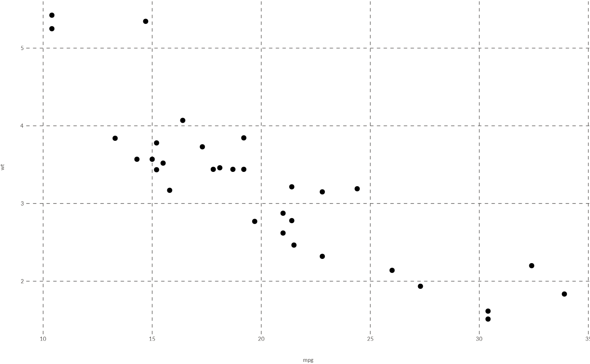
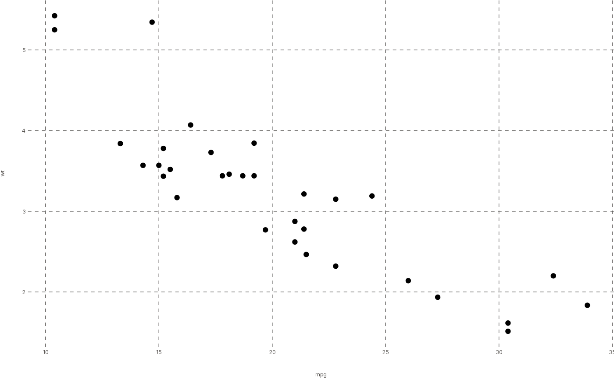
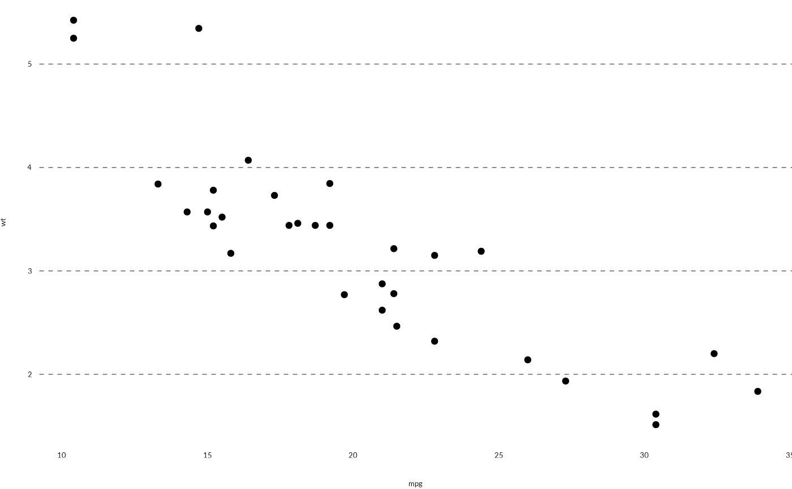

WJP_theme() returns a ggplot2 theme object that applies the World Justice Project
visual style guidelines to charts.
Usage
WJP_theme(
family = wjp_font_family(),
base_size = 10,
text_colour = "#524F4C",
grid = c("major", "x", "y", "none"),
grid_colour = "#5e5c5a",
grid_linetype = "dashed",
base_theme = NULL
)Arguments
- family
String. Font family for all text elements. Default is the active WJP font family (see
wjp_font_family()), which is"Lato Full"unless changed viaoptions(wjpr.family = ).- base_size
Numeric. Size of the axis text and titles, in points. Default is
10.- text_colour
String. Color of the axis text and titles. Default is
"#524F4C". WJP country reports use"#1A1A1A".- grid
String. Major grid lines to draw:
"major"(both directions, default),"x"(lines at the breaks of the x scale),"y"(lines at the breaks of the y scale), or"none".- grid_colour
String. Color of the grid lines. Default is
"#5e5c5a".- grid_linetype
Line type of the grid lines. Default is
"dashed".- base_theme
A complete ggplot2 theme to start from (e.g.,
ggplot2::theme_minimal(base_size = 11)). Default isNULL(a partial theme).
Details
The theme includes the following style specifications:
Transparent panel and plot backgrounds
Dashed grey grid lines (
#5e5c5a)WJP font family for all text elements (Lato Full by default; see
wjp_font_family()). The family is also set on the roottextelement, so titles, legends, and strips inherit it.Axis text and titles of
base_sizepoints in#524F4CNo axis ticks
Zero plot margins
WJP_theme() is a partial theme: it is added on top of the active
complete theme (ggplot2's ggplot2::theme_grey() unless you set another one).
Use base_theme to start from a different complete theme, such as
ggplot2::theme_minimal().
When passed as the ptheme argument of a WJPr chart function, the
elements that differ from the default WJP_theme() are applied after the
chart's own styling, so they take precedence (for example,
WJP_theme(base_size = 9) resizes the axis labels of every chart). Complete
themes (including those built with base_theme) are used as the starting
point of the chart instead.
Examples
library(ggplot2)
# Load fonts first
wjp_fonts()
# Apply WJP theme to a plot
ggplot(mtcars, aes(x = mpg, y = wt)) +
geom_point() +
WJP_theme()

# Same plot with Inter Tight
ggplot(mtcars, aes(x = mpg, y = wt)) +
geom_point() +
WJP_theme(family = "Inter Tight")

# Report style: dark text, horizontal grid only, minimal base theme
ggplot(mtcars, aes(x = mpg, y = wt)) +
geom_point() +
WJP_theme(text_colour = "#1A1A1A", grid = "y",
base_theme = theme_minimal(base_size = 11))
